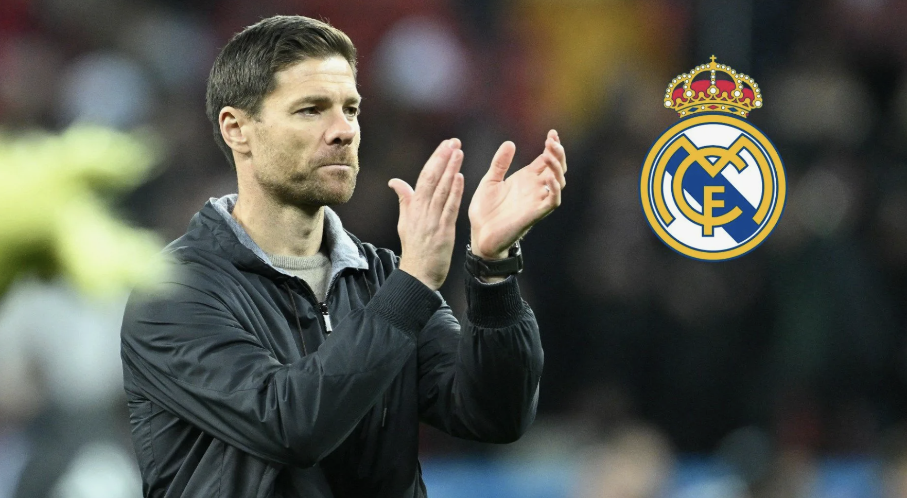

Хаби Алонсо — новый главный тренер "Реал Мадрид"
Хаби Алонсо подпишет контракт с «Мадридом» сроком до 2028 года.
Тренерский штаб Хаби Алонсо:
- Себас Парилья — помощник тренера
- Исмаэль Каменфорте — тренер по физподготовке
- Антонио Пинтус — тренер по производительности
- Альберто Энсинас — помощник тренера
- Беньят Лабайен — аналитик
- Луис Льопис — тренер вратарей